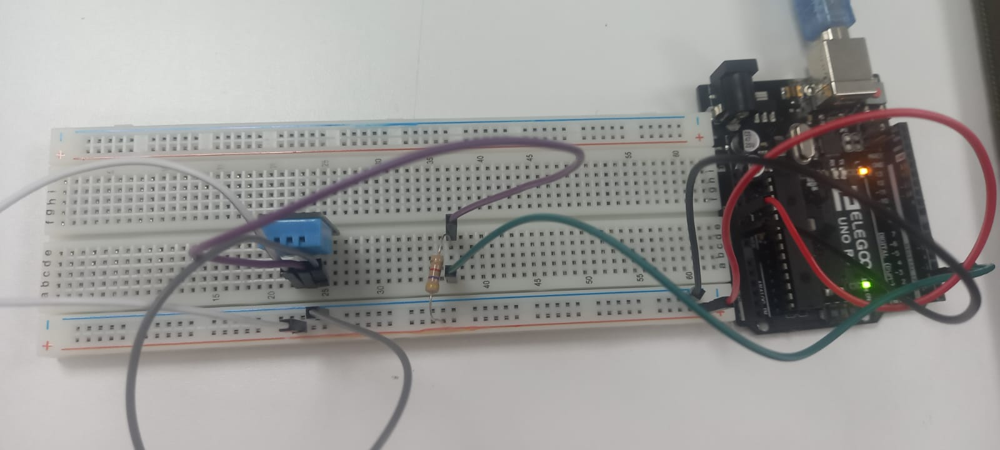

En la segunda semana aprend√≠ a poner videos, cambiar los tama√±os de imágenes y borrar elementos entre otras cosas. Le puse un estilo más personalizado a la página, cambie algunos colores y agregue alg√∫n que otro gif, para hacer la página más dinámica y por supuesto un poco de m√∫sica üé∂ borre todo el material que no serv√≠a para implementar mis propios trabajos y textos.
En la tercer semana estuvimos eligiendo el proyecto para trabajar durante el resto del ciclo. En el grupo elegimos un proyecto super interesante que permite a las personas que trabajan en el campo tomar las medidas de humedad de la tierra de una forma más fácil y menos trabajosa, esto les ahorra tiempo y energía. El proyecto se llama Cosecha Fácil.
En la cuarta semana estuvimos aprendiendo una nueva herramienta, OnShape. Es para construir en 3D, mi falta de costumbre en este tipo de diseño me hizo perder un poco, pero con ayuda del profesor pude hacer mejor los auriculares.
Seguimos aprendiendo sobre Tinkercad y las distintas funciones que podemos obtener a partir de los distintos circuitos. Hicimos un motor que gire en un sentido por un tiempo y luego en otro sentido. Los ejercicios en clase incluyeron un robot y de la misma forma tenía que avanzar, girar y volver a avanzar, por otro lado, tuvimos que hacer que los ojos parpadeen de una forma específica.
Circuitos de Cosecha Fácil probando el sensor de temperatura:
Luego de todo lo practicado en Tinkercad y con los materiales del proyecto listos, empezamos a realizar los planos de cómo sería el circuito y las funciones de nuestro proyecto. Con un medidor de temperatura y humedad conectado a Arduino y un protoboard pudimos medir la temperatura del salón y verificar que subía la temperatura al acercarle objetos calientes.
En la semana 10 de clases estuvimos definiendo el diseño electrónico y el diagrama de flujos, esto sirve para representar las soluciones algorítmicas como una serie de acciones que siguen un proceso determinado. En el caso de Cosecha Fácil primero se declaran las variables de humedad y temperatura, si el valor está dentro de los rangos correctos saldrá el usuario recibirá vía bluetooth el valor de la temperatura y humedad, en caso de que no sea el correcto saldrá el mensaje que debe usar +/- agua y vuelve a iniciar el proceso del diagrama de flujos.
Para la impresión 3D debimos tener varias cosas en consideración, las funciones específicas de Cosecha Fácil, el espacio físico donde se va a utilizar y los mecanismos internos del mismo artefacto. Con todo esto en consideración aplicamos un diseño cuadrado, compacto para que ocupe el menor espacio posible, sea fácil de instalar y sea funcional al 100%. Una vez hecho el diseño en Tinkercad pudimos enviarlo al encargado de impresión para posteriormente terminar de cortarlo y armarlo nosotros mismos.